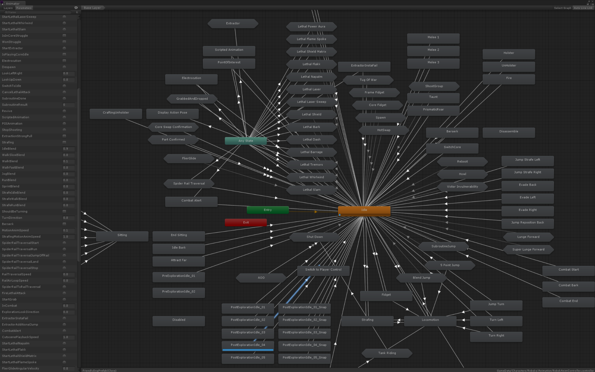

Unity’s Mecanim Animator Controller system was designed to be easily accessible to people without much programming experience. It manages to achieve that goal quite well at a basic level, but doing so creates the illusion that animations should define the way your game works when in fact the opposite is true. In theory it would be useful for non-programmers to be able to set up their characters using a visual interface that does not require any code, but in practice only the very simplest of behaviours can be implemented without code so an Animator Controller is useless on its own and when combined with scripts it becomes more complex and less flexible than simply defining all the necessary logic with scripts.
- Animator Controllers suffer from Delays and Unreliability, meaning that they do not respond to commands until their next update, they ignore some commands entirely, and they do not even allow you to easily verify which commands are followed or check other animation details.
- Animator Controllers force you to rely on Magic Strings. Many people end up making dedicated scripts for controlling animations in order to cleanly manage interactions with their Animator Controllers, which wastes a lot of time and effort on the initial development and keeping everything in sync.
- Animator Controllers cause ineffective Separation of Concerns where you arbitrarily define some parts of your character's behaviour in the Animator Controller and other parts in your scripts. This makes debugging much harder because any bug could come from your script or the Animator Controller or a combination of the two and any change to one might break the other. It also makes it harder to ask for help online because you need to post your script as well as several pictures of various parts of the Animator Controller which you think are relevant.
- Animator Controllers naively brute-force all Responsibilities into one place which prevents you from properly encapsulating individual aspects of a character as easily manageable or reusable groups.
- Animator Controllers greatly limit your Runtime Control since everything needs to be manually configured in the Unity Editor and cannot be dynamically changed by scripts.
- Animator Controller states do not even align with the background grid.

This monstrosity was taken from an official Unity Blog post ironically titled "Building for Reuse". The sheer number of states and parameters turns it from a meaningful visualisation of a complex system into a convoluted mess that would be extremely difficult to work with. Programming patterns and other techniques that could normally be used to effectively develop something that complex simply cannot be used when everything is constrained by Animator Controllers.
If you are interested in a direct practical comparison between the two systems, the 3D Game Kit example is dedicated to the process of converting an Animator Controller based character to use Animancer instead.
Delays and Unreliability
When you command an Animator Controller (such as changing its state or setting a parameter), it will not actually respond until the next time it gets updated and it might not even do what you want.
For example, if you call Play then check which state is currently playing it will still return the previous state until the next frame and if you call Play again during the same frame it will ignore each call after the first instead of ending up in the last state you told it to play:
// Currently Playing Idle.
animator.Play("Jump");
var state = animator.GetCurrentAnimatorStateInfo(0);
Debug.Log(state.IsName("Jump"));
This has several issues:
- It logs false because it is still Idle. It will only be playing the
Jumpanimation next frame. - To wait for the animation to finish, we first have to wait a frame before we can find out its length.
- It assumes the
Jumpstate is on layer 0 (it usually will be, but assumptions like that will cause bugs in more complex systems). - It is not possible to do something like
Debug.Log(state.name)to find out what the state actually is. - That's a lot of text just to check what is playing.
// Assuming this happens in the same frame as the above.
animator.Play("Attack");
state = animator.GetCurrentAnimatorStateInfo(0);
Debug.Log(state.IsName("Attack"));
This has several more issues:
- It still logs false because it is still
Idle. - But this time it will not be playing the
Attackanimation next frame, nor the frame after that. AllPlaycalls after the first are totally ignored, though it gives no error or other indication that this is happening. - So in order to function reliably, the script needs to wait a frame, verify that the
Attackanimation is actually playing (and if not, play it and wait another frame and check again), then it can finally check how long that animation will actually take to play.
On the other hand, Animancer responds to commands immediately, can properly handle multiple commands in the same frame, and allows you to easily check any details you want:
AnimationClip jump, attack;
// Currently Playing Idle.
var jumpState = animancer.Play(jump);
Debug.Log(animancer.States.Current == jumpState);// True.
Debug.Log(animancer.IsPlaying(jump));// True.
Debug.Log(jumpState.IsPlaying);// True.
Debug.Log(jumpState.Clip.name);// The name of the AnimationClip.
Debug.Log(jumpState.Length);// The length of the AnimationClip.
var attackState = animancer.Play(attack);
Debug.Log(animancer.IsPlaying(jump));// False (not jumping anymore).
Debug.Log(jumpState.IsPlaying);// False (not jumping anymore).
Debug.Log(animancer.IsPlaying(attack));// True.
Debug.Log(attackState.IsPlaying);// True.
Note that you are also less likely to even need to know the animation length because Animancer has several inbuilt ways of Waiting for Animations to End.
Magic Strings
A "magic" variable is an arbitrary value that is used to activate certain functionality in a program without being derived or retrieved in some way, it simply appears from nothing as if by magic. Likewise, a "magic string" is a string that is used to control something that it has no real connection with. Take the following code for example:
[SerializeField]
private Animator _Animator;
public void PlayAttack()
{
_Animator.Play("Attack");
}
In this case, "Attack" is a magic string. It's hard coded into the script without any explanation of what it is supposed to do or any validation to make sure it will actually work as intended. That line of code probably worked when it was written, but what about now? Maybe you're reading some code you wrote a while ago or someone else's code. Consider the following questions:
- Has a state with that name actually been set up in the Animator Controller? Are you sure it's not
"attack"or"Attack01"or"Light Attack"? Better go check. - What other animations are there to choose from? Better go check.
- What will happen when that animation finishes? Nothing? Maybe a transition? Maybe there's a parameter you need to set to determine which transition it will use? Better go check.
- How can you make sure everything is spelled correctly? Better go check.
- What else do you need to modify if you want to rename it to
"Light Attack"because you are about to add a"Heavy Attack"? Better go check. The state in the Animator Controller of course, but what else? What if there's another script relying on a string that was entered in the Inspector so aCtrl + Fto find the text"Attack"in your scripts won't even find it? - Is this script being used for multiple different Animator Controllers? Better go check. If it is then lucky you, now you get to re-check all those questions for each controller.
There's a clear pattern here: every time you want to verify an aspect of its behaviour, you have to figure out where that behaviour is actually defined and go check it manually.
So how could this be improved? Well, you've probably already guessed that the answer is "by using Animancer". With it, the code could look like this:
[SerializeField]
private AnimancerComponent _Animancer;
[SerializeField]
private AnimationClip _Attack;
public void PlayAttack()
{
var state = _Animancer.Play(_Attack);
state.OnEnd = OnAttackEnd;
}
This time we have slightly more complexity in the code, but less overall complexity because the logic is all in one place and does not require an Animator Controller to be set up separately. So what does that do to those questions from before?
- Irrelevant. The code defines the animation it will play. It will automatically create a state for the
_Attackanimation the first time it is passed into thePlaymethod. - In this case there are no other animations to choose from because we only have one
AnimationClipfield. But if for example you set up aWeaponclass with various fields for all of the animations it can have, then your IDE would be able to give you a list of those fields to choose from and you could probably jump to that class with a single keypress if necessary (F12in Visual Studio). - It will call the
OnAttackEndmethod. - If you make a spelling mistake it will cause a compile error which points to the problem so you can fix it immediately.
- You do not need to modify anything else, your IDE can rename all references to that field automatically. Though you could use a
[FormerlySerializedAs]attribute to ensure that any references previously assigned to the old field name will be kept by the new one. - Irrelevant. This script defines its own behaviour instead of needing to fit in with the way Animator Controllers have been set up.
Separation of Concerns
There is a programming concept known as "Separation of Concerns" which encourages you to separate your code into distinct sections which each cover different concerns (things the program needs to do). For example, if your game contains a player and enemies which can move around similarly but are controlled differently, instead of simply having one script for "everything the player does" and another for "everything an enemy does", you could separate the functionality for "moving a character" from the logic of "deciding where a character wants to move". This would allow you to modify the way characters move and have that change apply consistently to all characters or you could add a new type of enemy that uses different logic for deciding where to move without needing to implement the same movement code again.
Mecanim attempts to utilise this concept by separating the structure of states, transitions, and parameters in an Animator Controller from the rest of the game logic in scripts, but in practice those concerns often need to be coupled far too tightly for that separation to provide any practical benefit.
 This state diagram taken straight from the Unity Manual actually illustrates one of the problems with Mecanim quite effectively. To transition from the Walk state to the Fall state, a transition must be set up between those states so that a script can detect that the character is no longer on the ground and trigger it. Then when the script detects that the character is back on the ground it can try to go back to Idle, except there is no transition from Fall to Idle so nothing will happen. Development time was originally spent creating the state machine and the code logic separately, and now even more time needs to be spent figuring out whether the problem is a bug in the ground detection code or in the state machine (or both) and then fixing it without breaking anything else. The code is useless without the specific Animator Controller structure it expects and the Animator Controller is useless without code that specifically knows how to control it. Both sides are very tightly coupled to each other, but Mecanim forces them to be separate so you have to waste time getting them to work together and ensuring that changes to one do not break the other.
This state diagram taken straight from the Unity Manual actually illustrates one of the problems with Mecanim quite effectively. To transition from the Walk state to the Fall state, a transition must be set up between those states so that a script can detect that the character is no longer on the ground and trigger it. Then when the script detects that the character is back on the ground it can try to go back to Idle, except there is no transition from Fall to Idle so nothing will happen. Development time was originally spent creating the state machine and the code logic separately, and now even more time needs to be spent figuring out whether the problem is a bug in the ground detection code or in the state machine (or both) and then fixing it without breaking anything else. The code is useless without the specific Animator Controller structure it expects and the Animator Controller is useless without code that specifically knows how to control it. Both sides are very tightly coupled to each other, but Mecanim forces them to be separate so you have to waste time getting them to work together and ensuring that changes to one do not break the other.
That problem would never occur with Animancer. You still need to detect when the creature leaves and returns to the ground, but when you tell it to play an animation it will simply play that animation. The script wants something done, so it tells Animancer exactly what to do.
Parameters
Another aspect of this problem is the way parameters work. In theory, they provide a useful abstraction between commands and actions. For example, to have a character perform a series of attacks as long as the player keeps pressing the attack button, you might create a trigger parameter which causes each transition to the next attack and have your script set that trigger every time the button is pressed. But in practice that creates a multitude of issues:
- Triggers stay active until a transition uses them, so if the player tries to attack while casting a spell or getting knocked over or performing some other action, they will wait until that action is done and then attack, possibly several seconds after they pressed the button (meaning the player does not necessarily still want to attack, so the controls would feel unresponsive).
- This is generally solved by having your script manually reset the trigger after setting it, which means you need to wait for at least one frame and thus greatly increases the complexity of what would otherwise be very simple code.
- You also need to make sure to reset the triggers for all other actions whenever you perform a new one. So when you attack, you need to reset the triggers for jump, dodge, block, interact, cast spell, dance, etc.
- Code almost always needs to know what state the character is in to determine things like whether they can move or whether other characters can talk to them. So now the script can't simply tell the Animator Controller to "Attack", it also needs to check if the current state is "Attack 1" or "Attack 2" or "Attack 3" or "Attack 4", up to however many attacks the character has. This means the theoretical separation of the "Attack" command from its effects is now ruined because the script needs to explicitly know about all the states involved anyway.
- The user interface is missing many features that are standard in all code editing programs (IDEs like Visual Studio):
- You can't simply view a list of all transitions that use a particular parameter.
- You can't select two transitions to view them side by side.
- You can't easily ensure that similar animations have similar state and transition settings (left/right or armed/unarmed pairs, up/down/left/right groups, etc).
- When you look at the parameter in the
AnimatorController, it gives no indication of which scripts intend to use it, if any. It doesn't even let you enter a description of what it is used for (not that it would help much because scripts wouldn't be able to see the description anyway). - Likewise, when you look at the script, it doesn't give a clear indication of which parameters it intends to use either. You need to read the whole script to find out its requirements and then you still need to figure out which
AnimatorControllers it is actually used with.
- Scripts can't easily validate their requirements upfront, such as checking if a required parameter exists when you add the script to an object, or even on startup. The only indication you get that it doesn't exist is when you run the game and try to actually set the parameter. This means that instead of getting a clear indication immediately when something has an issue, you have to test everything extensively. To be clear: extensive testing is good, but it should be your last line of defence against bugs, not your only defence.
In Animancer, the same mechanic could be implemented using a simple array of animations and an index to remember the current one. All the details you need about a character's attacks are right there in your script so you can directly access anything you need.
Responsibilities
There is a programming concept known as the "Single Responsibility Principle" which states that every class or function should have responsibility over a single part of the functionality of the overall application. This is extremely helpful for developing complex systems in a way that is easy to maintain as the application grows, yet Animator Controllers do not support that concept. Instead, these God Objects are responsible for all the animations a character can perform, regardless of which systems actually use those animations.
Animancer gives you the freedom to define individual aspects of a character wherever they make the most sense, which often means creating your own logical groupings and wrappers for them so that multiple characters can share the same structure.
These groupings can be defined using a different approach depending on the circumstances:
MonoBehaviours are attached to a specificGameObjectin a scene or a prefab. This is useful if each group will generally be associated with one specific prefab or scene object so that you do not need a separate asset for each of them.ScriptableObjects are generally saved as isolated assets inside the project. This is useful for sharing animation groups among multiple prefabs and scene objects.- The
DirectionalAnimationSets used in the Directional Sprites examples are an example of such a grouping.
- The
Some examples:
- Instead of each individual
AttackandSkillscript needing to acquire its own references to the appropriate animations for your current weapon, theWeaponitself could hold those animations. An array of attacks for a combo, alternatives for heavy attacks, a backstab, a custom idle or walk to hold the weapon correctly, and so on. Or rather than simply referencing an array ofAnimationClips for the attacks, the weapon could have an array ofAttackDatawhich contains the clip, damage value, damage type, force multiplier, etc. If you do use anAttackDataclass to wrap other statistics with the animations, aMonoBehaviourbased approach would allow each weapon to have different stats, even if they have the same set of animations as another. - Instead of scattering your animation references among each individual locomotion script (walk, climb, swim, etc.) you could group them together into a
LocomotionDataclass which allows you to define movement speeds and other parameters alongside the animations while remaining entirely separate from their attacks and other actions. If you find it likely that you will want to reuse a particular set of animations many times with different stats, aScriptableObjectbased approach could allow you to defineLocomotionAnimationsseparately fromLocomotionStats.
Using Controller States can also be an effective way of grouping certain animations together because they allow you to use multiple smaller Animator Controllers instead of a single large one.
Runtime Control
Animator Controllers can only be configured in the Unity Editor, then their structure is mostly fixed in place and either cannot be changed at runtime or requires some additional setup to make changes possible:
- You can't manually control animations in the Inspector.
- You can't add new states. You can only use Animator Override Controllers to replace existing animations, meaning you often need to create dummy
AnimationClips and states with the sole purpose of being replaced. - You can't change parameter or transition details.
- You can't control animation speeds unless you link them to a parameter.
- You can't control animation time, only normalized time.
- You can't control animation weights or even check them for debugging.
- You can't fade layer weights without updating them yourself over time.
- You can't move animations to a different layer.
- You can't change layer masks.
- You can't enable or disable Inverse Kinematics (for example, to improve performance when not needed or when characters get far enough away from the camera).
- You can't access any information about animations that aren't currently playing.
- You can't access state names for debugging. You have to use hash codes.
All of those things can easily be done with Animancer.